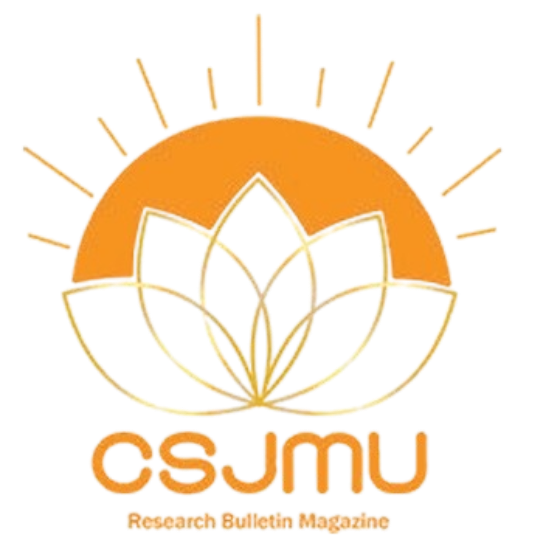
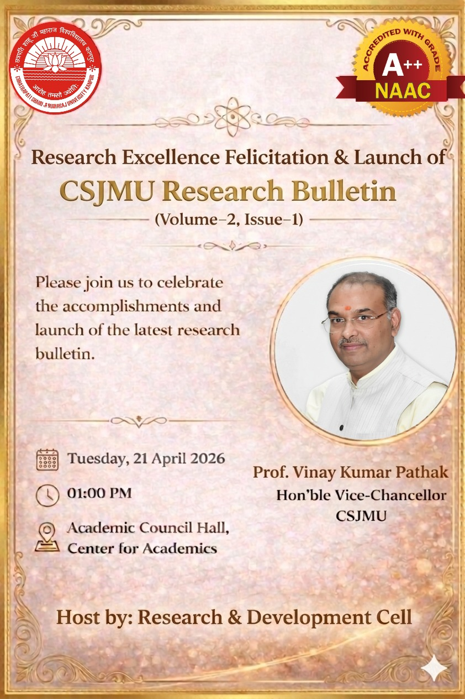
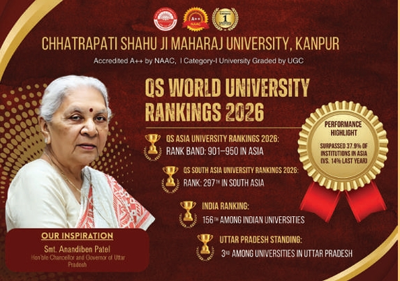
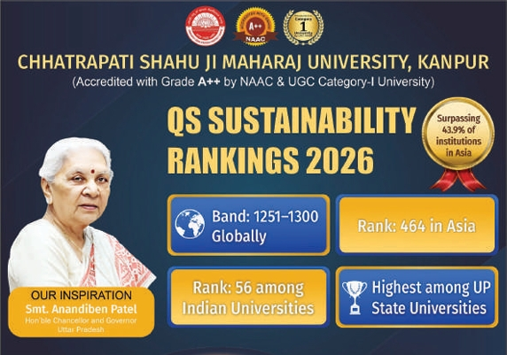
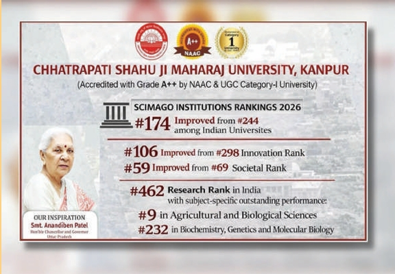
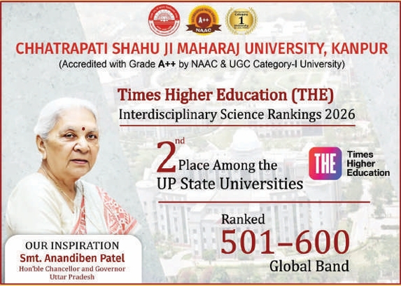

01:00 PM
Academic Council Hall
Center for Academics
Arrival / Welcome of the guests
Breif about the program by
Dr. Namita Tiwari
Dean, R&D
Research Bulletin Launch Volume 2 (Issue 1)
Message by
Prof. Sudhir Kumar Awasthi
Pro-Vice Chancellor
Message by
Prof. Vinay Kumar Pathak
Hon’ble Vice Chancellor
Distribution of Certificates
Vote of thanks by
Dr. Shweta Pandey
Associate Dean R&D
Total Scholars
Promoting AI-driven innovation and interdisciplinary research to build intelligent solutions for real-world challenges.
International Review of Management and Marketing
Dynamics of Atmospheres and Oceans
Discover Environment
Peer-to-Peer Networking
The University Research & Development (URD) Cell at CSJMU is a dynamic hub promoting innovation, research excellence, and industry collaboration. It provides administrative and managerial support for sponsored projects, consultancy, institutional research, minor grants, intellectual property processes, fellowships, and academic events. Focused on real-world challenges, the URD Cell fosters a culture of creativity, inquiry, and problem-solving among faculty and students while encouraging interdisciplinary and industry-linked research. The university supports research through well-defined policies, seed funding, scholarships, and access to shared facilities. CSJMU offers a well-equipped campus with modern academic infrastructure, IT-enabled labs, a central library, and extensive sports and residential facilities. Research support includes access to Ph.D. data via student portals, central instrumentation facilities, digital and print resources, plagiarism detection tools (Drillbit), Shodhganga e-theses, and over 13,000 journals through the ONOS initiative. Ph.D. admissions follow UGC Regulations 2022 and university ordinances. The URD Cell is introducing an AI-integrated research governance framework to enhance supervision, ethical compliance, and research monitoring, positioning CSJMU as a leader in transparent and technology-driven research ecosystems.
Email: research@csjmu.ac.in
Location: CSJM University, Kanpur
Dean, Research & Development
Associate Dean
Associate Dean
Associate Dean
Assistant Dean
Assistant Dean
Assistant Dean
Assistant Dean
Assistant Dean
Assistant Dean
Assistant Dean
Assistant Dean
Assistant Dean
Assistant Dean




Enter your Scopus ID to download your certificate